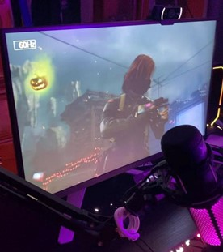

Essentials
Arguably, the cornerstone of any gaming setup is the gaming PC itself, making it essential to make the right choices when determining its specifications. Whether opting for a prebuilt PC or embarking on the journey of building one from scratch, careful consideration is paramount. A multitude of components can be incorporated into your PC setup, each serving a distinct purpose in enhancing its performance and functionality. From processors and graphics cards to storage drives, memory modules, and cooling systems, the options for customization and expansion are vast. Whether seeking to bolster processing power for demanding tasks or optimize storage capacity for extensive media libraries, the diverse array of available components allows users to tailor their PC configurations to meet their specific requirements and preferences. With careful selection and integration of these components, users can create a personalized PC setup that not only meets their current needs but also offers room for future upgrades and enhancements.
List of necessary PC parts
- Motherboard
- CPU
- GPU
- System memory
- Hard drive or SSD
- Power supply unit
- Case
The monitor
When gaming, the monitor is the primary display you'll be focusing on, so it's crucial to opt for one with fast refresh rates, enhanced color accuracy, and high resolution. Achieving smooth visuals is essential for an immersive gaming experience. Fortunately, these features don't always come with an exorbitant price tag. While curved monitors can elevate the aesthetics of your gaming setup, they don't necessarily have to break the bank. Consider wall-mounting your monitor if space is limited or if you prefer a minimalist setup, as this can enhance the overall ambiance of your gaming room while also saving on storage space.
Keyboards and Mice / Mouse pads
From keyboards and mice to headphones, speakers, and webcams, these accessories play a crucial role in improving user interaction and productivity. Keyboards come in various forms, including mechanical, membrane, and ergonomic designs, catering to different preferences and needs. Meanwhile, mice offer customizable buttons, adjustable DPI settings, and ergonomic shapes to optimize gaming or productivity tasks. High-quality headphones and speakers deliver immersive audio experiences for gaming, multimedia consumption, or communication purposes.
Mouse pads are essential accessories that play a crucial role in optimizing the performance of computer mice and enhancing user comfort and precision during gaming or productivity tasks. These pads provide a smooth and consistent surface for mouse movement, ensuring precise tracking and minimizing friction for seamless cursor control. Available in various sizes, shapes, and materials, mouse pads cater to different preferences and needs. Gaming-oriented mouse pads often feature specialized surfaces optimized for accuracy and speed, while ergonomic designs provide wrist support and comfort during extended use. By investing in a high-quality mouse pad that complements their mouse and preferences, users can elevate their gaming or work experience with improved precision, comfort, and style.
Headphones / Headsets
Headsets are indispensable accessories for gaming, communication, and multimedia consumption on PCs, offering users a convenient and immersive audio experience. These devices typically consist of headphones paired with a built-in microphone, providing both high-quality sound output and input for clear communication. Designed with features such as noise cancellation, surround sound, and ergonomic designs, headsets ensure that users can enjoy crystal-clear audio while minimizing distractions from ambient noise. Whether engaging in intense gaming sessions, participating in online meetings, or enjoying multimedia content, headsets offer a versatile solution for all audio needs. With wired and wireless options available, users can choose the headset that best suits their preferences and requirements, enjoying comfort, convenience, and superior audio performance for an enhanced computing experience.
Cameras and Speakers
Webcams enable users to engage in video calls, online meetings, and live streaming with clear and crisp visuals. Equipped with features such as high-definition resolution, autofocus, and low-light correction, modern webcams deliver sharp and detailed images, ensuring that users are seen clearly during video interactions.
PC speakers are vital for delivering high-quality audio output for gaming, multimedia consumption, and communication purposes. Available in various configurations, including stereo, surround sound, and Bluetooth-enabled options, PC speakers offer immersive audio experiences with rich bass, clear vocals, and detailed sound reproduction.
Whether users are gaming, watching movies, or listening to music, investing in high-quality PC cameras and speakers enhances their overall computing experience by providing immersive multimedia capabilities and facilitating seamless communication.